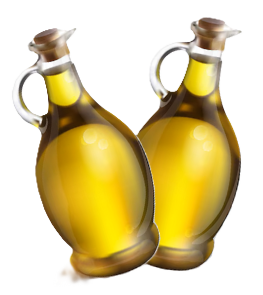

Aceite
El aceite de oliva es un aceite vegetal obtenido del fruto del olivo (Olea europaea),
ampliamente utilizado en la gastronomía y apreciado por sus propiedades
nutricionales. Su calidad depende del método de extracción y del grado de
refinamiento.
